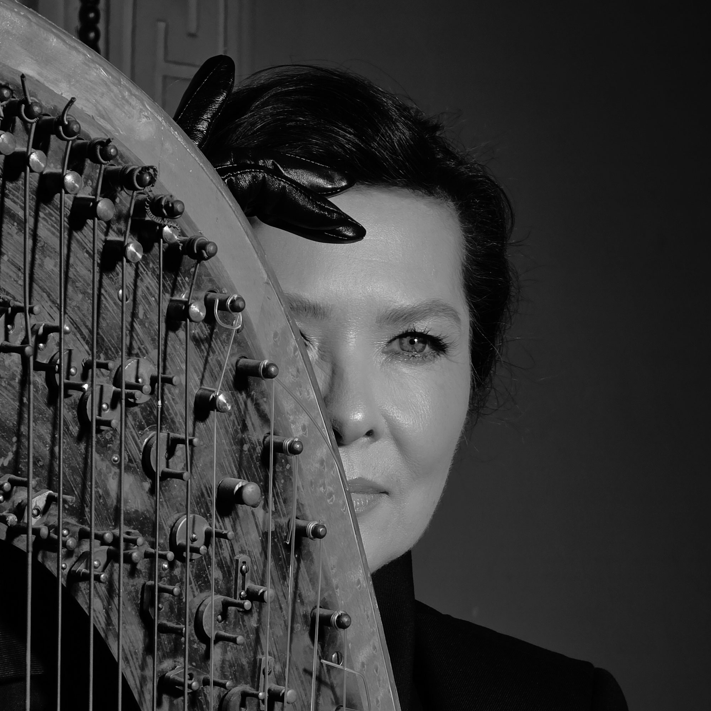

About

Svetlana Kisselev approaches creation with the same sense of wonder as a child stepping into a magical confectionery filled with every imaginable delight. A place where the familiar coexists with the unknown, where every shelf reveals a new surprise, and where curiosity is rewarded at every turn.
The difference is that she is no longer the child standing in awe before the enchanted world.
She is the one creating it.
Each piece begins with the same irresistible attraction to discovery: forgotten histories, sacred symbols, fairy tales, religious iconography, royal treasures, personal memories, fragments of distant cultures, and impossible combinations that should not coexist — and yet somehow do. Svetlana gathers them with the delight of an explorer collecting wonders and transforms them into wearable worlds.
Her studio is not merely a place of production. It is a cabinet of curiosities, a theatrical stage, an alchemist's laboratory, and a portal into an ever-expanding universe where Byzantine crowns converse with African spirits, Baroque opulence embraces contemporary expression, and mythology intertwines with personal transformation.
What drives her is not the pursuit of perfection, but the thrill of possibility. The excitement of asking, “What if?” and following that question wherever it leads. Each creation is an invitation to enter a realm where imagination is unconstrained, where beauty is unapologetically excessive, and where the extraordinary feels not only possible, but tangible.
For Svetlana, creating is an act of enchantment. The same enchantment a child experiences upon discovering a world beyond imagination — except that now she possesses the freedom, the skill, and the audacity to bring that world into existence with her own hands.
Every piece leaves the studio with a numbered certificate of authenticity — a record of its materials, its place within the body of work, and the process behind it. It travels with the piece as provenance for its next owner, and as a record for whoever encounters the work after that.